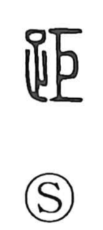

距

Kun: kezume | On: kyo
distance ・ to separate ・ to depart ・ to differ
Explanation
Shirakawa reads 距 as a phono-semantic character built on the phonetic 巨 (kyo). 巨 originally depicts a carpenter’s square bent at a right angle, a shape likened to a rooster’s spur; because one arm juts out and does not align with the other, it came to suggest refusing to fit, then resisting, standing apart, and the sense of a gap or estrangement. In compounds such as 鶏距 it names the cock’s spur itself. With this image of protrusion and misalignment as its core, 距 develops meanings like to keep separate, to move away, and to differ—hence the idea of distance.